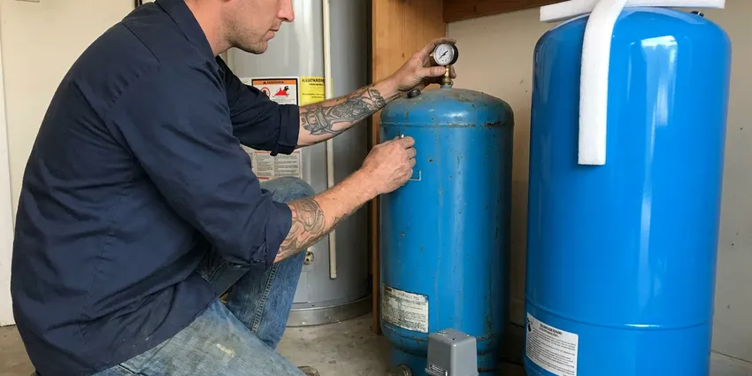

Water Softener Replacement in Arlington, TX
For effective water softener replacement in Arlington, TX, trust DFJ Plumbing. We ensure your new system is perfectly sized and installed for optimal performance.
- Fast, Efficient Replacement
- Expert, Certified Plumbers
- Top Brands Available
- Worry-Free Installation

Need a New Water Softener in Arlington, TX?
Our skilled plumbers are ready to install your new water softener quickly and correctly.
Reliable Water Softener Replacement Services in Arlington, TX
DFJ Plumbing specializes in comprehensive water softener replacement services for homeowners across Arlington, TX. Texas water, particularly in our region, often has high mineral content which can lead to limescale buildup, damaging pipes, fixtures, and appliances.
Our expertise includes:
- Comprehensive water testing for accurate sizing
- Expert removal and disposal of old units
- Precise installation of all water softener types

Additional Plumbing Replacement Services in Arlington, TX
When repairs are no longer enough, our replacement services in Arlington, TX deliver durable upgrades that restore full performance.


Customers
Why Choose DFJ Plumbing for Water Softener Replacement in Arlington, TX?
We are committed to delivering lasting solutions that improve your water quality and protect your home's infrastructure.
- Local Expertise, Our plumbers are familiar with the hard water conditions prevalent in Arlington, ensuring tailored solutions.
- Quality Systems, We only install durable, high-efficiency water softeners from leading manufacturers.
- Transparent Pricing, You will receive clear, upfront costs before any work begins, with no hidden fees.
Citywide Coverage
From the bustling city center to the quietest suburbs of Arlington, our dedicated teams are ready to provide prompt and professional water softener replacement when you need it most.
Experienced Team
Each DFJ Plumbing plumber undergoes rigorous training and stays updated on the latest water treatment technologies and local plumbing codes relevant to water softener replacement projects.
Safety-First Approach
We take great care to safely remove and dispose of your old water softener and install the new unit without compromising the integrity of your home's existing systems.
Trusted Certified Arlington Plumbing Services Professionals
At DFJ Plumbing, we take pride in providing certified plumbing services throughout Arlington, TX. Backed by recognized industry credentials, our experienced plumbers combine technical skill with genuine customer care. Whether it is repair, installation, or maintenance, we follow strict safety and quality standards to deliver long-lasting results you can trust.
Call Us Now PHCC Plumbing Contractor Recognition
PHCC Plumbing Contractor Recognition Better Business Bureau (BBB) Accreditation
Better Business Bureau (BBB) Accreditation Angi Certified Pro
Angi Certified Pro ISO 9001 Quality Management Certification
ISO 9001 Quality Management CertificationReliable Water Softener Replacement Services in Arlington, TX
Traditional Salt-Based Water Softener Replacement in Arlington
Salt-based water softeners are a common and effective solution for hard water in Arlington. These systems use ion exchange to remove calcium and magnesium minerals, which are notorious for causing scale buildup. We replace old, inefficient salt-based units with modern, high-efficiency models that use less salt and water, providing superior softening for your home. Our plumbers ensure proper brine tank installation and regeneration settings for optimal performance.

Salt-Free Water Conditioner Replacement in Arlington, TX
For homeowners in Arlington, TX seeking an alternative to traditional salt-based systems, salt-free water conditioners offer a different approach. These units, sometimes called 'descalers,' condition water to prevent mineral scale without actually removing the minerals or adding salt. While they don't produce 'soft' feeling water, they effectively protect pipes and appliances from scale. We can replace your existing salt-free system or help you transition from a salt-based unit.
Whole-Home Water Softener System Upgrades in Arlington
Upgrading your entire whole-home water softener system in Arlington is a significant investment that pays off in the long run. Older systems may struggle with the mineral content found in Texas water or simply be undersized for your household's needs. We assess your current water usage and hardness levels to recommend and install a perfectly matched system, ensuring every faucet in your home delivers soft, clean water.
Emergency Water Softener Failure Replacement in Arlington, TX
A sudden failure of your water softener can lead to immediate hard water problems, impacting laundry, dishes, and even skin. If your unit is leaking, not regenerating, or showing error codes, DFJ Plumbing offers emergency replacement services in Arlington, TX. We prioritize rapid response to get a new, functioning softener installed, minimizing disruption and protecting your plumbing from further scale damage.
Commercial Water Softener Replacement in Arlington
Businesses in Arlington often rely on robust water softening systems to protect equipment and ensure product quality. From restaurants to laundromats, hard water can significantly impact operations. DFJ Plumbing provides commercial water softener replacement services, installing larger, more durable systems designed to handle higher demands. We work to minimize downtime and ensure your business has a consistent supply of soft water.
Replacing Fleck Water Softeners in Arlington, TX
Fleck is a well-known brand for reliable water softener control valves, often found in many residential and commercial systems across Texas. If your Fleck-controlled softener is beyond repair or simply outdated, DFJ Plumbing can expertly replace the entire unit. We are familiar with various Fleck models and can recommend an equivalent or upgraded system that integrates seamlessly with your existing plumbing in Arlington.
Replacing Pelican Water Softeners in Arlington
Pelican Water Systems are popular for their comprehensive whole-house filtration and softening solutions, including both salt-based and salt-free options. If your Pelican system in Arlington is nearing the end of its lifespan or requires a significant upgrade, our technicians are proficient in their replacement. We ensure that your new Pelican system or an equivalent quality brand is installed to factory specifications for optimal performance and warranty validity.

Cost-Effective Water Softener Replacement Options in Arlington, TX
While a new water softener is an investment, DFJ Plumbing offers cost-effective replacement options for homeowners in Arlington, TX. We provide a range of systems at different price points, always prioritizing durability and efficiency. Our team helps you understand the long-term savings from reduced appliance wear, lower energy bills, and less soap consumption, ensuring you get the best value for your hard water solution.
Water Softener Replacement Near Me in Arlington, TX
When you search for 'water softener replacement near me' in Arlington, TX, you want a local, trustworthy company that understands your specific needs. DFJ Plumbing is your community's go-to expert, providing prompt and professional services right to your doorstep.
Our local presence means we are familiar with the unique plumbing challenges and water quality issues in Arlington. We ensure quick dispatch and efficient service, getting your new water softener installed with minimal fuss.
DFJ Plumbing at a Glance
- Fully licensed plumbing team covering Arlington, TX
- Same-day appointments and 24/7 emergency response
- Upfront, flat-rate pricing before work begins
- 4.9-star rated by 812+ Texas customers
Arlington Map
Arlington Information
- Population
- 398,431
- Area codes
- 682/817/972
- Service area
- Arlington and communities within 40 miles
- Nearby
- Grand Prairie, Mansfield, Bedford, Euless
Given the high mineral content often found in Texas water, a well-functioning water softener is crucial for protecting the plumbing and appliances in homes across Arlington.
Expert Services
Trust our professionals for reliable DFJ Plumbing solutions in Arlington, TX.
Our Specialized Plumbing Services in Arlington, TX
At DFJ Plumbing, we provide a complete range of plumbing services across Arlington, TX. From leak detection to full system installations, our team ensures fast, precise, and affordable service for both residential and commercial properties. Explore our core services below:


How Our Water Softener Replacement Process Works in Arlington, TX
From initial assessment to final installation, we handle every step with professionalism and precision.
Request a Quote
Call (737) 405-5978 or fill out our online form to schedule an appointment. We will discuss your hard water concerns and provide an upfront, no-obligation estimate.
On-Site Assessment
Our plumber will visit your Arlington home to test water hardness, assess your current system, and recommend the best replacement options for your household size and budget.
Professional Installation
We expertly remove your old unit, prepare the site, and meticulously install your new water softener, ensuring all connections are secure and up to code.
Frequently Asked Questions About Water Softener Replacement in Arlington
The cost of water softener replacement in Arlington, TX varies based on the type of system, its capacity, and installation complexity. Generally, homeowners can expect to pay between $1,500 and $4,000 for a quality unit and professional installation. We provide transparent, upfront quotes after assessing your specific needs.
New water softeners typically come with two types of warranties: a manufacturer's warranty on the equipment itself, which can range from 5 to 10 years or more for tanks and control valves, and an installation warranty from DFJ Plumbing. We stand behind our work with a solid warranty, ensuring your peace of mind.
DFJ Plumbing installs a wide range of reputable water softener brands, including but not limited to Fleck, Autotrol, Culligan, Pelican, and Watts. We select brands known for their reliability, efficiency, and long-term performance, ensuring you get a high-quality system that meets your needs.
A new, properly sized water softener can sometimes improve water pressure if your old unit was undersized or had significant mineral buildup restricting flow. However, a water softener's primary function is to remove hardness minerals, not to boost pressure. If low water pressure is your main concern, we can investigate other causes.
Most residential water softener replacements can be completed within 3 to 6 hours, assuming no major plumbing modifications are required. Our skilled plumbers work efficiently to minimize disruption, restoring soft water to your home as quickly as possible on the same day.
Texas is known for its hard water, which contains high levels of dissolved minerals like calcium and magnesium. These minerals can lead to scale buildup in pipes, reduced efficiency of water heaters and appliances, spots on dishes, and dry skin and hair. A functional water softener is essential for combating these issues in Arlington homes.
Common signs include a return of hard water symptoms like scale buildup on fixtures, dry skin and hair, dingy laundry, or excessive soap usage. Other indicators are a noticeable decrease in water pressure, leaks from the unit, or if your existing softener is over 10-15 years old and requiring frequent repairs.
In many areas of Arlington and Texas, a plumbing permit is not typically required for a like-for-like water softener replacement, especially if there are no significant changes to the existing plumbing lines. However, if new lines are run or the system type changes substantially, a permit might be necessary. We handle all necessary checks and ensure compliance with local codes.
What People Are Saying About Our Plumbing Experts?

James P.
Our commercial plumbing system had a leak under the sink, and DFJ Plumbing handled it professionally. The plumbers arrived quickly and restored everything without disruption to our customers.
Commercial Plumbing · Grand Prairie, TXRobert G.
The trenchless sewer replacement saved our front yard. They walked us through the camera inspection footage first so we knew exactly what we were paying for.
Sewer Line Replacement · Euless, TX
Sofia M.
Two new toilets installed in one visit, no mess left behind, and the tech even adjusted a faucet he noticed was dripping. Fair pricing and really friendly.
Toilet Installation · Mansfield, TX
Emily R.
I called DFJ Plumbing for plumbing repair, and the technician was fast, polite, and thorough. They explained the problem clearly and fixed it the same day. I will definitely hire them again. Highly recommended!
Plumbing Repair · Grand Prairie, TXLaura S.
I scheduled a water heater replacement, and the team made the process smooth and affordable. The new unit works perfectly, and they cleaned up after completing the job.
Water Heater Replacement · Grand Prairie, TX
Daniel K.
A pipe burst at 11 pm and they actually answered. The plumber showed up within the hour, shut everything down, and had us back to normal the next morning. Could not ask for more.
Emergency Plumbing · Mansfield, TX